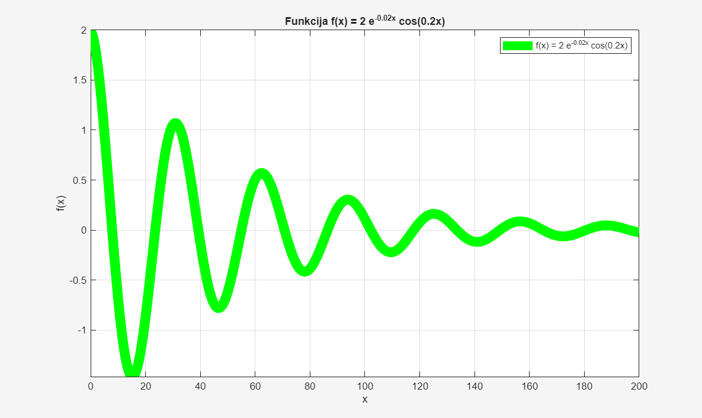
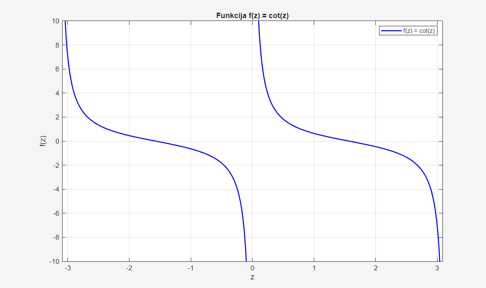
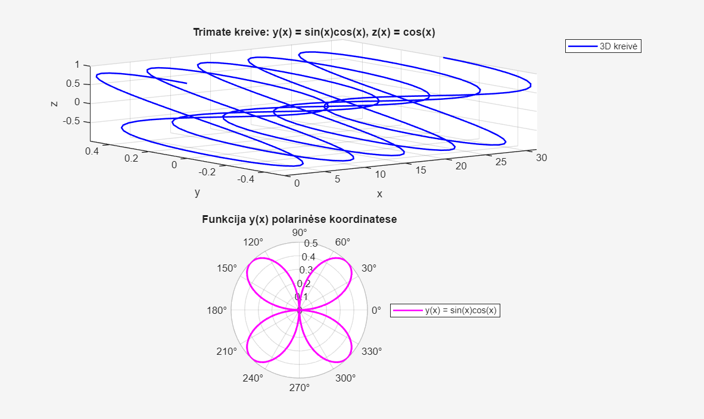
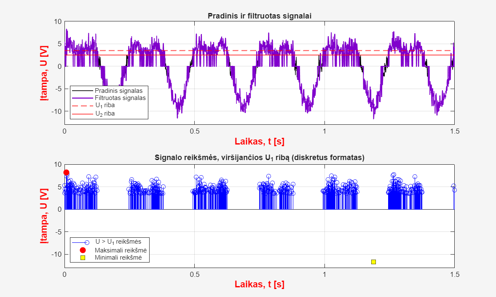
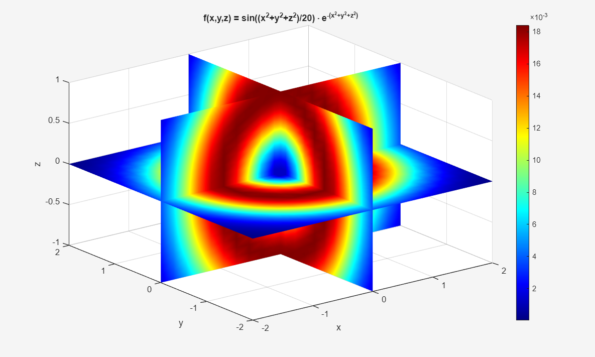
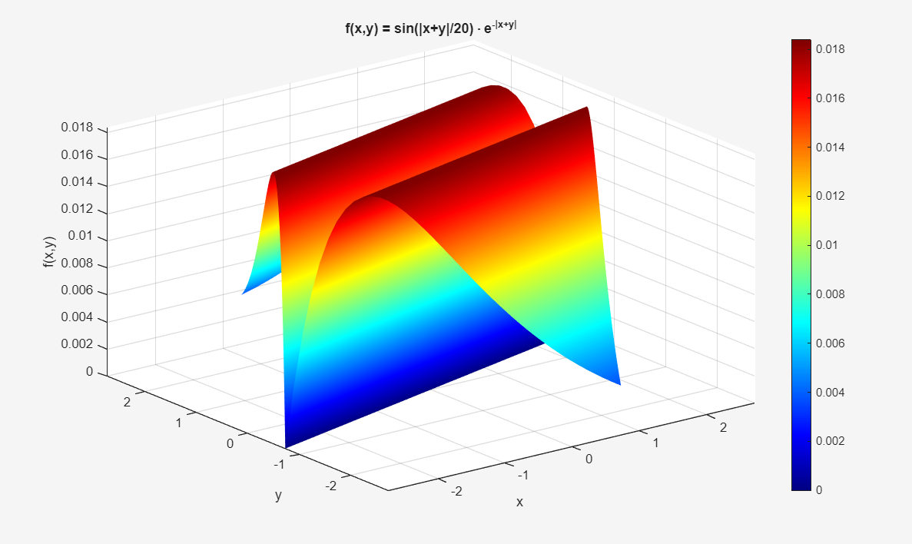
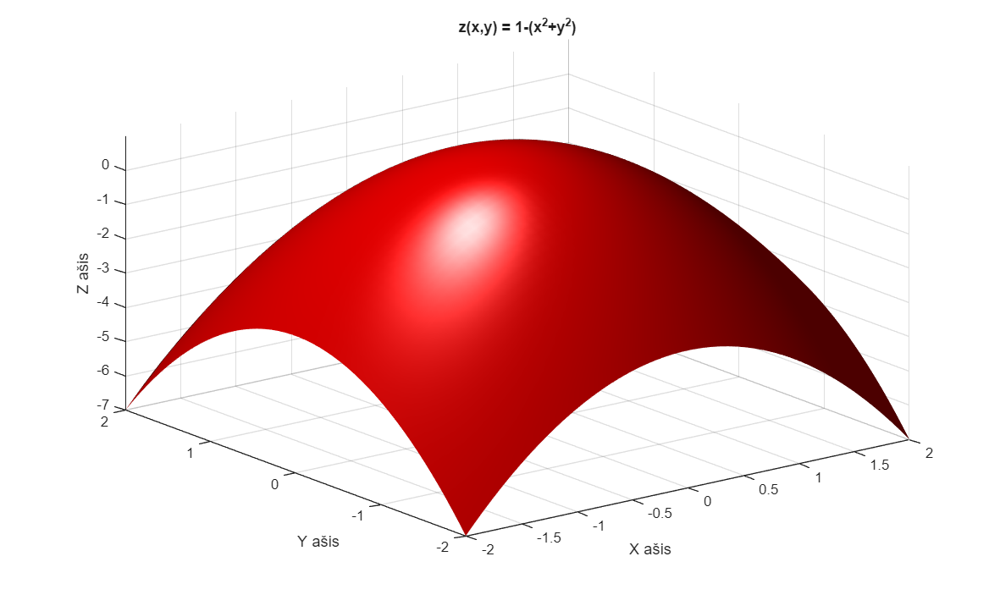

1 grafikas
Funkcijos f(x) = 2e⁻⁰·⁰²ˣ cos(0,2x) grafikas. Matyti, kaip svyravimų amplitudė mažėja didėjant x.
Universiteto laboratoriniai darbai ir asmeniniai projektai
3 ir 4 laboratorinių darbų metu sudaryti grafikai. Visi paveikslėliai – mano MATLAB darbų ekrano nuotraukos.

Funkcijos f(x) = 2e⁻⁰·⁰²ˣ cos(0,2x) grafikas. Matyti, kaip svyravimų amplitudė mažėja didėjant x.

Funkcijos cot(z) grafikas, kuriame matomos periodiškumo savybės ir trūkio vietos.

Viename paveikslėlyje pateikta trimatė parametrinė kreivė ir funkcijos sin(x)cos(x) grafikas polinėse koordinatėse.

Pradinio ir filtruoto signalų palyginimas bei reikšmių, viršijančių nustatytą ribą, atvaizdavimas.

Trijų kintamųjų funkcijos vizualizacija pjūvių plokštumose su spalvine reikšmių skale.

Funkcijos f(x,y) = sin(|x+y|/20) · e⁻|ˣ⁺ʸ| trimatis paviršius.

Funkcijos z(x,y) = 1 − (x²+y²) trimatis paviršius.
Daugiau laboratorinių darbų galite rasti: mano GitHub laboratorinių darbų saugykloje .
Elektroninę muziką kuriu kaip „brxshi“. 2026 m. išleidau albumus „dust“ (liepos 24 d.) ir „radiance“ (lapkričio 6 d.).